De Groene Jonker
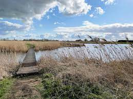 De Groene Jonker is een waterrijk vogel-natuurgebied met een grote plas en vele rietpluimen,
waar vele weide en moerasvogels het hele jaar te zien zijn.
Voor de vogelliefhebber en de wandelaar is het hier heerlijk vertoeven.
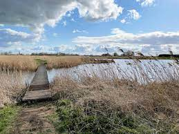 De Groene Jonker is een waterrijk vogel-natuurgebied met een grote plas en vele rietpluimen,
waar vele weide en moerasvogels het hele jaar te zien zijn.
Voor de vogelliefhebber en de wandelaar is het hier heerlijk vertoeven.
Fort Uithoorn
 Het Fort bij Uithoorn is in 1911 gebouwd,veel authentieke elementen
Het Fort bij Uithoorn is in 1911 gebouwd,veel authentieke elementen
van het fort zijn door de jaren bewaard gebleven.
Ieder jaar is er tijdens het open monumentenweekend van alles te beleven
voor jong en oud. In de Ronde Venen zijn maar liefst zes forten te vinden,
en is er een leuke fortenfietsroute.
Het Fort bij Uithoorn is in 1911 gebouwd,veel authentieke elementen van het fort zijn door de jaren bewaard gebleven.
Ieder jaar is er tijdens het open monumentenweekend van alles te beleven
voor jong en oud. In de Ronde Venen zijn maar liefst zes forten te vinden,
en is er een leuke fortenfietsroute.
Rondvaarten
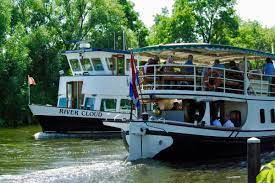In de omgeving zijn rederijen die gezellige rondvaarten verzorgen
op de plassen in Loosdrecht en Vinkeveen
of een lesje volgen bij de wakeboardschool.
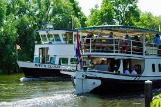In de omgeving zijn rederijen die gezellige rondvaarten verzorgen
op de plassen in Loosdrecht en Vinkeveen
of een lesje volgen bij de wakeboardschool.
Kasteel De Haar Haarzuilen
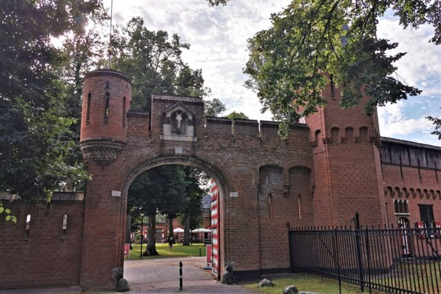Op Kasteel de Haar in Haarzuilens waan je je even
in het luxe leven van de 20e eeuw.
Dwaal door de prachtige kamers en de magische kasteeltuin.
Je kan kiezen om het kasteel te bezoeken of alleen het kasteelpark.
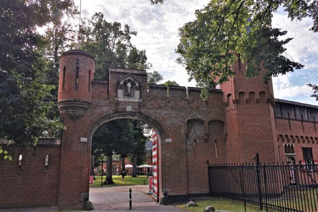Op Kasteel de Haar in Haarzuilens waan je je even
in het luxe leven van de 20e eeuw.
Dwaal door de prachtige kamers en de magische kasteeltuin.
Je kan kiezen om het kasteel te bezoeken of alleen het kasteelpark.
Flora Holland
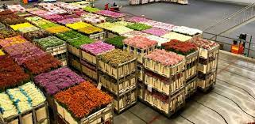Royal Flora Holland Aalsmeer is de grootste bloemenveiling ter wereld.
Al meerd dan 100jr verbinden zij kwekers en kopers van bloemen en planten.
Elk jaar doen duizenden (inter)nationale bezoekers
de rondleiding door deze wereldwijde markt
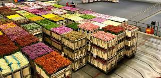Royal Flora Holland Aalsmeer is de grootste bloemenveiling ter wereld.
Al meerd dan 100jr verbinden zij kwekers en kopers van bloemen en planten.
Elk jaar doen duizenden (inter)nationale bezoekers
de rondleiding door deze wereldwijde markt
Bloemencorso
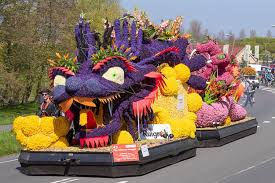Bloemencorso is een jaarlijks evenement van praalwagens
versierd met allerlei soorten bloemen en planten met de gezelligheid
van dans en muziek die een route aflegd, en plaats vindt in verschillende plaatsen
zoals Aalsmeer - Bollenstreek - Eelde - Rijnsburg - Tiel etc.
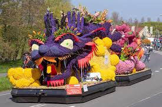Bloemencorso is een jaarlijks evenement van praalwagens
versierd met allerlei soorten bloemen en planten met de gezelligheid
van dans en muziek die een route aflegd, en plaats vindt in verschillende plaatsen
zoals Aalsmeer - Bollenstreek - Eelde - Rijnsburg - Tiel etc.
De Grote St.-Bavokerk
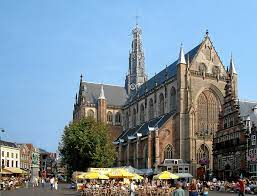De St.Bavokerk is een laatmiddeleeuws kerkgebouw in de gezellige stad Haarlem
gelegen aan de Grote Markt. Een indrukwekkende stad en kerk die de moeite waard is,
De vloer is samengesteld uit honderden grafstenen, en scheepsmodellen die aan
het plafond hangen, maar ook om andere bezienswaardigheden zoals:
Frans Hals museum of Molen de Adriaan.
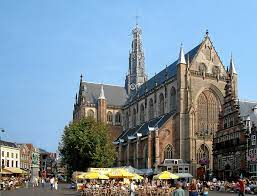De St.Bavokerk is een laatmiddeleeuws kerkgebouw in de gezellige stad Haarlem
gelegen aan de Grote Markt. Een indrukwekkende stad en kerk die de moeite waard is,
De vloer is samengesteld uit honderden grafstenen, en scheepsmodellen die aan
het plafond hangen, maar ook om andere bezienswaardigheden zoals:
Frans Hals museum of Molen de Adriaan.
Anne Frank museum
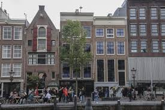Anne Frank Museum te Amsterdam. Hoe dicht bij de geschidenis kun je staan?
Bekijk de ruimte achter de boekenkast waar Anne Frank en haar familie onderdoken
en lees fragmenten uit haar dagboek en leer meer over de Tweede Wereldoorlog,
en de Jodenvervolging aan de hand van deze bijzondere plek.
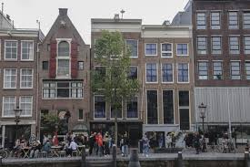Anne Frank Museum te Amsterdam. Hoe dicht bij de geschidenis kun je staan?
Bekijk de ruimte achter de boekenkast waar Anne Frank en haar familie onderdoken
en lees fragmenten uit haar dagboek en leer meer over de Tweede Wereldoorlog,
en de Jodenvervolging aan de hand van deze bijzondere plek.
The Bulldog
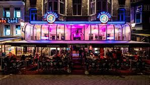The Bulldog was de eerste coffeeshop geopend te Amsterdam
tussen de grachten van de Wallen,
en is al tientallen jaren het symbool van de cannabisconsumptie.
Populair bij zowel buitenlandse toeristen als de lokale bevolking.
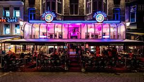The Bulldog was de eerste coffeeshop geopend te Amsterdam
tussen de grachten van de Wallen,
en is al tientallen jaren het symbool van de cannabisconsumptie.
Populair bij zowel buitenlandse toeristen als de lokale bevolking.